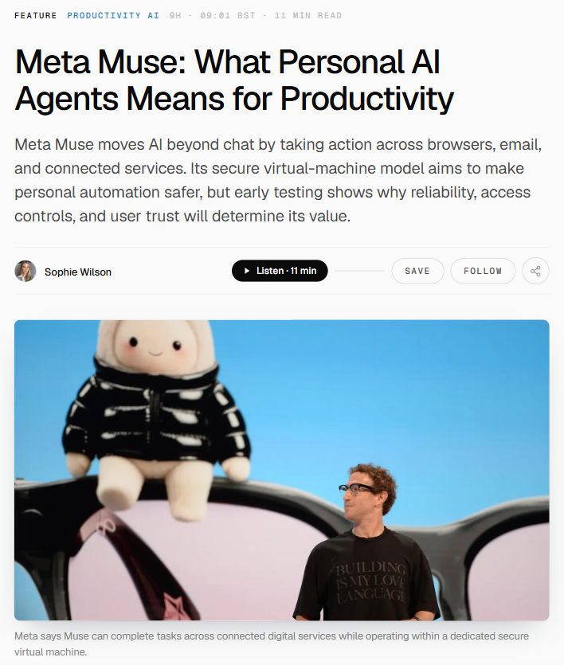

zouba pav, LILY (1 Billion Followers Summit, in collaboration with Google Gemini)
“Released on April 3 on Hugging Face under an Apache 2.0 license, VOID (Video Object and Interaction Deletion) is Netflix Research’s first publicly available AI tool. It doesn’t just erase objects from video. It models how the remaining scene should physically behave after the object is gone. Erase one car from a two-vehicle collision and it generates footage of the surviving car continuing down an empty road, with debris, smoke, and scorched pavement replaced by pristine asphalt.”
Markman, “Netflix Launches VOID AI That Rewrites Video Scenes After Filming,” Forbes, April 7, 2026
Data Science in your pocket, “Netflix 1st Video LLM: Void model”
“The broader signal matters more than VOID alone. Netflix is now publishing AI research and releasing models, a behavior associated with technology infrastructure companies (Meta, Google, Anthropic), not traditional media companies. That positioning, as a technology company that happens to produce entertainment rather than a studio that uses some technology, is the strategic shift that matters for long-term valuation.”
Markman, “Netflix Launches VOID AI That Rewrites Video Scenes After Filming,” Forbes, April 7, 2026
Wonka’s The Golden Ticket: An AI Gene Wilder
Tilly Norwood, “AI Actor”
When I ask how production is proceeding on Misaligned, a feature-length project in which Norwood will feature as the protagonist, the dead-eyed avatar is unable to provide me with an approximate release date and defaults to a vague synopsis of the plot.
Klee, “AI ‘Actor’ Tilly Norwood Told Me That ‘All Lives Matter,’” WIRED, Sept. 2026
“Well, it’s a coming-of-age story set in a surreal digital world,” says Norwood, which, according to a press release from Particle 6, was built with several publicly available third-party AI tools. “We’re calling it the Tillyverse, which I think is rather grand. It’s about my life really, all the lovely chaos and intrigue.” Not exactly a killer tagline.
Klee, “AI ‘Actor’ Tilly Norwood Told Me That ‘All Lives Matter,’” WIRED, Sept. 2026
The Fall? of the Creative Class
“…the primary impacts of AI art will be on culture and society rather than the macroeconomy. Yet arts jobs might be a microcosm for other “creative-adjacent” work that occupies a much larger share of economic activity. Take the tech sector itself, which is the clearest place where AI-driven job loss has shown up outside the media business, as powerful coding agents replace human programmers. Annual tech job gains stood at nearly 300k in 2022, but the sector has been bleeding jobs every year since then in what is now its longest labor market downturn.”
Politano, “AI and the Fall? of the Creative Class,” Apricitas Economics, Sept. 27, 2026



Wilson, “Meta Muse: What Personal AI Agents Means for Productivity,” UC Today, Oct. 1, 2026

How It Started

How It’s Going
“AI-powered cameras produced by Flock and its competitors are tracking and creating digital footprints of everyday Americans — a nightmare for individual liberties unless Congress enacts meaningful rules and accountability,” Hawley, a Missouri Republican, said in a statement to CBS News. “That’s why I’m introducing the STOP Flock Abuse Act to establish basic safeguards for AI-powered cameras and protect Americans’ fundamental constitutional rights. Law-abiding Americans should not be treated like criminals.”


“The creation and sharing of AI-generated non-consensual intimate imagery (AI-NCII) has increased rapidly due to the ease with which the content can be generated and shared via websites, social media and private messaging platforms, many with end-to-end encryption.
In 2023, estimates suggested 500, 000 such videos existed online. By 2025, this number was estimated to be 8 million, mostly targeting women and girls…Sarah Morgan said: “Anyone with a single photo online can be quickly and easily targeted in content that falsely depicts them in sexual or intimate contexts, of any nature, without their consent. Emerging evidence demonstrates the wide-ranging and persistent harms of this digital abuse.””

Noble, Algorithms of Oppression, “The Future of Knowledge in the Public”

Noble, Algorithms of Oppression, “The Future of Knowledge in the Public”

Noble, Algorithms of Oppression, “The Future of Knowledge in the Public”

Noble, Algorithms of Oppression, “The Future of Knowledge in the Public”

Noble, Algorithms of Oppression, “The Future of Knowledge in the Public”
Recommended Viewing
Simon Willison, “2026 in LLMs (so far)”, closing keynote, WeAreDevelopers World Congress North America, Sept. 25, 2026
“Conditioned on reference media, Muse Realtime Avatar brings any character into a live conversation. A photographic portrait responds through subtle expressions, while a full-body illustration gestures and shifts posture as it speaks.”
Meta AI Research, “Bringing Your Muse to Life,” Sept. 23, 2026
“We enforce strict safety requirements throughout the experience to reduce the risk of misuse and protect people.” … “To make generated media traceable, Muse Realtime Avatar uses Meta Video Seal to embed a durable, invisible watermark throughout generated video.”
Meta AI Research, “Bringing Your Muse to Life,” Sept. 23, 2026
A Meta Muse character: “Yeti Smith” walking
“Clearly,” says Dale (Joshua Paul Dale, Chuo University), “what Meta is trying to do is make Muse into a companion. And it’s doing it in the simplest possible way … It’s using a very simplified, tiny 2-inch screen to encourage you to anthropomorphise the figure on it so that you treat it as if it’s human even though you know it’s not.”
Its cuteness is, according to Seaborn (Katie Seaborn, University of Cambridge), “strategic”. “It’s very natural to emerge from this controversy with a technology that uses cuteness because … it’s so weak. Don’t worry about it. You can trust us.”